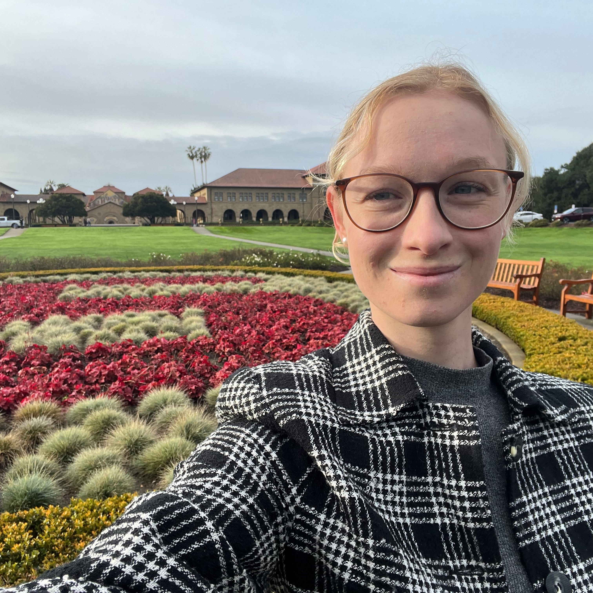
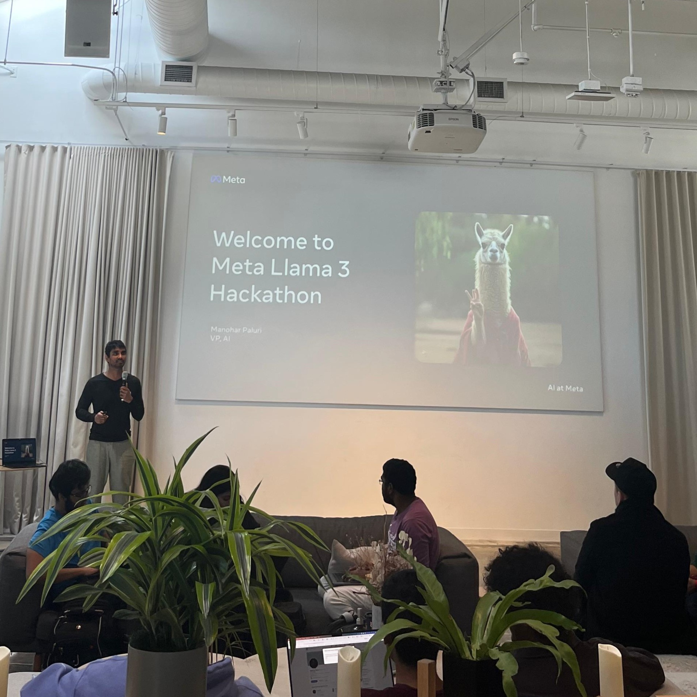
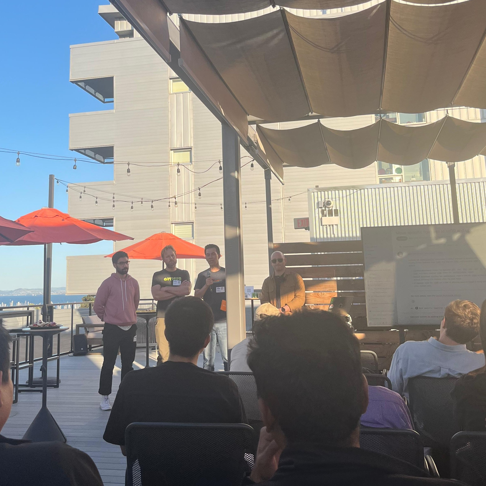
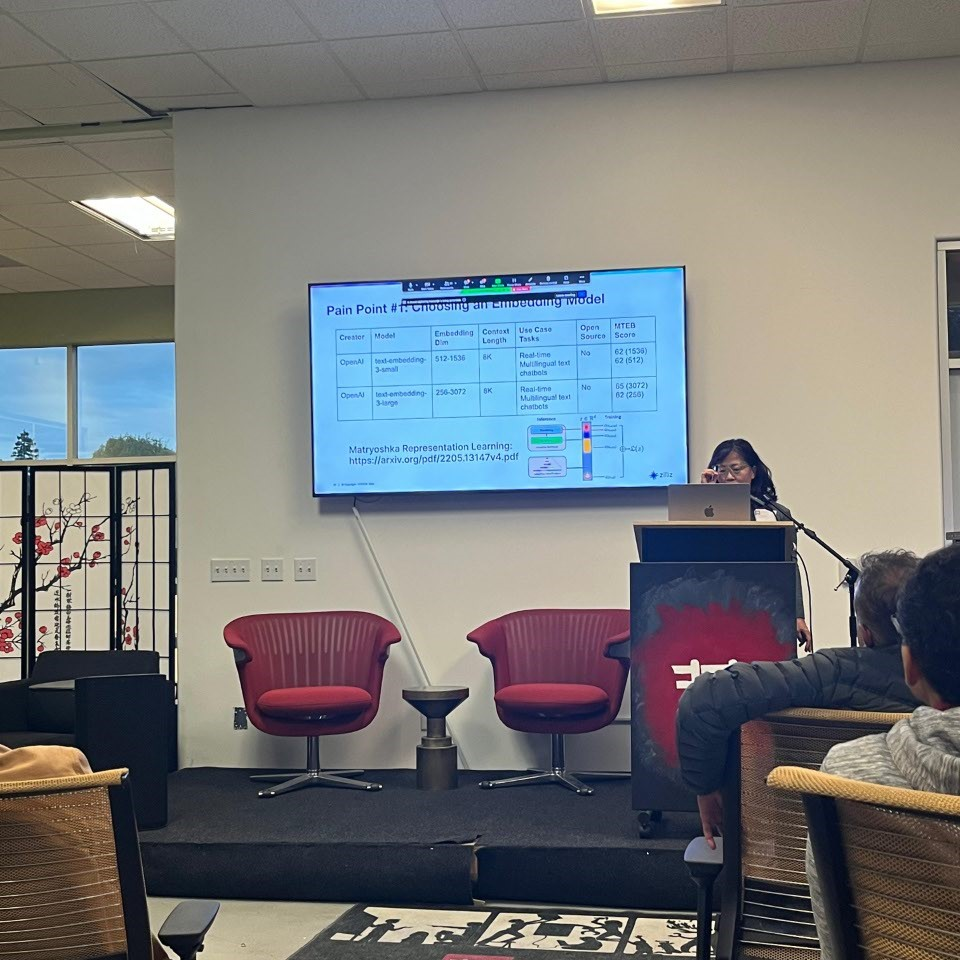
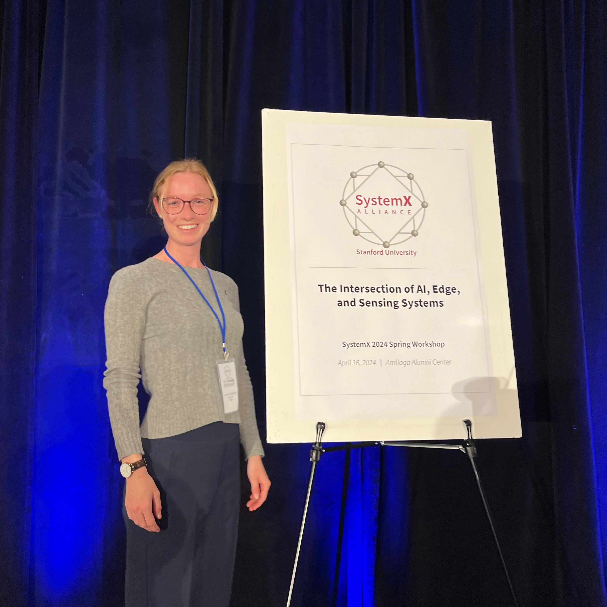

I spent seven months at Bosch Research in Sunnyvale, working on on-device learning for embedded sensor systems and taking part in the Stanford SystemX Alliance. This is what I took away from it.
How it came about
...
The research
On-device learning ...

What's different about doing research there
Pace, conference culture, how industry and university talk to each other.


Alongside the research, I sat in on classes at the Stanford Graduate School of Business on management and leadership. A step outside the lab, and a useful counterweight to thinking about systems and models all day. But very helpful for personal development and growth.

The event most closely tied to the research itself was SystemX, Stanford's conference on embodied AI.

What I'd tell someone considering it
The practical advice: visa, timing, what to set up before you go.